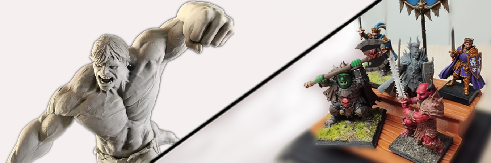
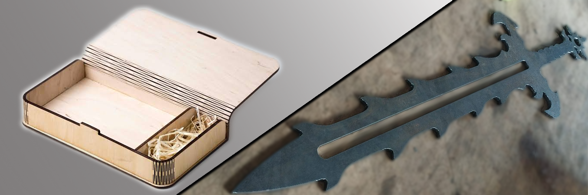
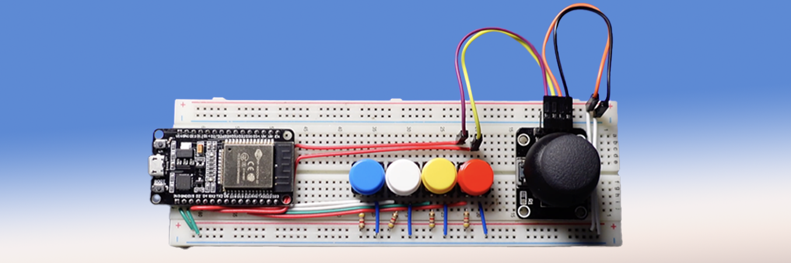
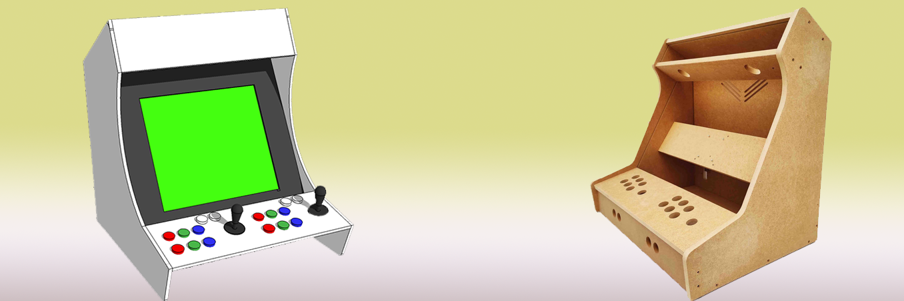

Disseny 3D
Disseny de peces, figures i conceptes preparats per a passar de digital a real.
01TALLER CREATIU · SES SALINES / MALLORCA / ONLINE
Disseny, tecnologia i cultura maker. Convertim idees en productes.
NO ÉS MÀGIA. ÉS EXPERIÈNCIA.
01 / SOBRE MI
Pito de dimoni és una marca creativa i tècnica que cerca explorar, construir i donar vida a idees.
Em moc entre el disseny i la fabricació digital, els circuits, les consoles retro i els projectes que comencen amb curiositat. Disfruto tant ideant una peça com ajustant el prototip fins que queda bé.
Aquest portfoli és un tast de treballs, experimentes i coses que he fet. Sempre hi ha alguna cosa nova per aprendre, desmontar i tornar a montar.
02 / CERVELL COM A CAIXA D'EINES
No tenc un ecosistema definit: Tenc un taller en constant evolució.
Disseny de peces, figures i conceptes preparats per a passar de digital a real.
01FDM i SLA. Prototips, peces funcionals i objectes personalitzats.
02Disseny per al tall i gravat en ferro, fusta, metracrilat, cuir, cartró,... Prototipat i art fets amb precisió.
03Arduino, components i experiments. Donam noves funcions a idees.
04Consoles, recreatives, emuladors, jocs de cartes, jocs de taula, ... Qualsevol cosa relacionada amb videojocs.
05M'encanten els reptes que mesclen disciplines, eines i una bona dosi de creativitat.
0603 / COSES QUE HE FET
Una mostra d'idees i projectes.


SVG/DXF fileDisseny de peces, gravat i tallat personalitzats.
Vull fer alguna cosa així!↗
Una espasa làser, un rellotge binari, un Simon says, ...
Vull fer alguna cosa així! ↗
04Una màquina arcade en miniatura que combina disseny, fabricació, nostàlgia i tecnologia puntera.
Vull fer alguna cosa així! ↗✳Aquests són conceptes de mostra de treballs realitzats.
04 / LA TEVA IDEA, AL MEU TALLER
Si tens una idea, cerques col·laboració o simplement vols parlar amb algú del teu projecte, escriu-me. Conta'm què tens al cap i intercanviem opinions.